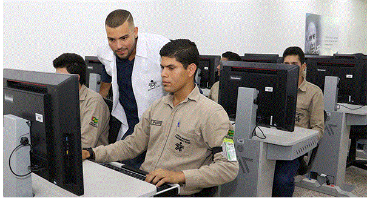

Objetivos
- Dar formación profesional integral a los trabajadores de todas las actividades económicas, y a quienes sin serlo requieran dicha formación, para aumentar por eso medio la productividad, y promover la expansión y promover el desarrollo económico y social del país, bajo el cocepto de equidad social distributiva.
- Fortalecer los procesos de formación profesional integral que contribuyan al desarrollo comunitario a nivel urbano y rurarl, para su vinculación o promocion en actividades productivas de interés social y económico.
- Apropiar métodos, medios y estrategias dirigidos a la maximización de la cobertura y la calidad de la formación profesional integral.
- Participar en actividades de invetigación y desarrolo tegnológico, ocupacional y social, que contribuyan a la actualización y mejoramiento de la formación profesional integral.
- Propiciar la relaciones internacionales tendientes a la conformación y operación de un sistema regional de formación profesional integral, dentro de las iniciativas de integración de los países dde América Latine y el Caribe.
- Actualizar en forma permanente, los procesos y la infraestructura pedagógica, tegnológica y administrativa para responder con eficiencia y calidad, a los cambios y exigencias de la demanda de formación profesional integral.
Funciones
- Impulsar la promoción social del trabajador, a través de su formación profesional integral, para hacer de él un ciudadano útili y responsable, poseedor de valores morales éticos, culturales y ecológicos.
- Velar por el mantenimiento de los mecanismos que aseguren el cumplimiento de las disposiciones legalres y reglamentarias, relacionadas con el contrato de aprendizaje.
- Organizar, desarrollar, administrar y ejecutar programas de formación profesional integral en cordinación y en función de las necesidades sociales del sector productivo.
- Velar porque en los contenidos de los programas de formación profesional se mantenga la unidad técnica.
- Organizar programas de formación profesional integral para personas desempleadas y subempleadas, y progremas de readaptación para personas discapacitadas.
- Expedir títulos y certificados de los programas y cursos que imparta o valide, dentro de los campos propios de la formación profesional integral, en los niveles que las disposiciones legales le autoricen.
- Desarrollar investigaciones que se relacionen con la organización del trabajo y el avance tenológico del país, en función de los programas de formación profesional.
Deberes de los servidores públicos del SENA
- Aportar a la misión institucional, cumpliendo con compromiso, eficacia y responsabilidad la función asignada.
- Proponer acciones que permitan mejorar y cumplir con mayor efectividad los procesos y procedimientos de la institución.
- Contribuir a la productividad del SENA, haciendo buen uso del tiempo destinado al cumplimiento de su labor utilizando toda la capacidad productiva.
- Fidelidad a la institución, actuando de buena fe y conservando la debida reserva de la información de la entidad.
- Acatar las órdene e instrucciones que se le indiquen, cuando esta dentro del marco legar y del ámbito de su competencia.